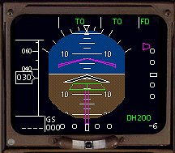
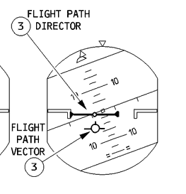
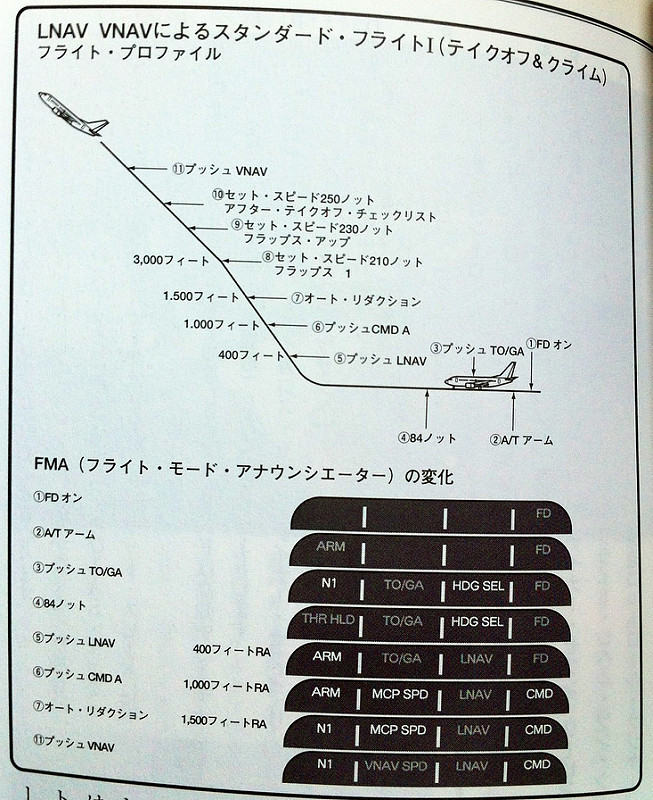

今天无意中打开 Maxthon，看到了推荐的一则旧闻——『东航两飞机险相撞』。我记得事件当天就有看到这则报道，当时的第一反应是：类似荷兰皇家航空发生的空难（特内里费空难）在虹桥机场被避免了。今天看到的更多是后续报道，新闻报道的焦点几乎都在 V5 的机长和疏忽的管制员身上。
俗话说，对航空航天没点儿兴趣的码农不是好的 CTO。凭借我多年积累的航空知识，和对航空事业发展的关注——其实就是对各城市机场航班老是延误的那点儿感性认知——跑道入侵征候（被规避了，不算空难）在今天不能算是罕见。不过这次这个事件号称是相差三秒相撞，事后也被定型为 A 类跑道入侵事件，说明事件本身还是非常严重的。
下面摘自澎湃新闻的后续报道。
通报称，这是一起塔台管制员遗忘飞机动态，违反工作标准而造成的人为原因严重事故征候。性质极为严重，属于A类跑道入侵，险些发生飞机相撞。当时两架飞机垂直距离仅19米，翼尖距13米，两机仅差约三秒就会发生碰撞。320机组果断处理，操纵正确，避免了一起事故。330机组接受了穿越跑道的错误指令后，虽然看到了飞机起飞，但并未提出质疑。
通报认为，管制员违反相关规定，盲目指挥，双岗制责任落实不到位；专业人员资质是重中之重，自制能力要跟上；管理手段和工作流程存在问题，要系统思考原因，加以改进。
通报还提到，330机组存在SOP的问题，观察不周，不按规定，关闭了应答机。带飞左副驾驶不知道东航穿越跑道程序。没有交叉检查，没有互相证实。但是机组没有机械听从塔台原地等待命令，加速穿越，避免了两机相撞，暴露了训练上的问题。320机组处理非常到位，临危决断，立了大功。副驾驶操纵迟疑，点了一下刹车，机长迅速接过操纵，以7.03度/秒的速率，带杆到机械止动位。
首先明确了这是一起人为因素造成的事故，而且是塔台管制员疏忽占主因、A330 机组占次因的事故。事后调查表明，A330 机组存在 SOP 问题，以及观察不周、关闭应答机等问题。
其次，报道中提到了 A320 机组在事件中临机处置立了大功。7.03度/秒的速率，带杆到机械止动位，才避免了两机相撞的事故。当然，这其中还有一个明显的对比：『副驾驶操作迟疑，点了一下刹车』，后来『机长迅速接过操纵』，才避免了机毁人亡的悲剧。
这其中有多个航空相关的知识，自己也是边看新闻边搜索，记下来，也给其他有兴趣的朋友科普一下。
基础概念
跑道入侵
具体的知识见维基百科跑道入侵条目。
按照定义，很显然，本次事件中，A330 错误地出现在飞机起飞和降落的保护区域表面，是一起跑道入侵事件无疑。
据悉，通报指出，此次事件性质极为严重，属于A类跑道入侵。
据业内人士介绍，“A类跑道入侵”非常罕见。目前，民航界把跑道入侵分为以下五个级：
A类，间隔减小以至于双方必须采取极度措施，勉强避免碰撞发生的跑道入侵；
B类，间隔缩小至存在显著的碰撞可能，只有在关键时刻采取纠正或避让措施才能避免碰撞发生的跑道入侵；
C类，有充足的时间和（或）距离采取措施避免碰撞发生的跑道入侵；
D类，符合跑道入侵的定义但不会立即产生安全后果的跑道入侵；
E类，信息不足无法做出结论，或证据矛盾无法进行评估的情况。
按照《民用航空器事故征候》标准，A类属于航空器严重事故征候，B类属于一般事故征候。据悉，根据新下发的文件，“A类跑道入侵”是指必须立即采取极端措施才能避免相撞的跑道入侵。
——摘自传送门 新民晚报
客机离地起飞的介绍
这里有一篇通俗易懂的科普文《客机驾驶探秘Airline Pilot 3.3 起飞离地》。
为简化阅读和防链接失效，同时把重点摘录整理如下。
PFD
PFD，直译过来就是『主飞行显示屏』，主要用来显示飞机的飞行状况，以及计算机给出的一部分飞行建议。

上图是波音 737 的 PFD。其中，紫色的倒 V 字型标识是 FD 指令条（Flight Director Command Bar），下面白色的倒 V 字型标识代表自己的飞机。按照例子中的状态解读：飞机需要执行拉起 +8 度抬头的操作。

上图是空中客车的 PFD。Flight Path Director (FPD) 线是计算机所给出的指令，Flight Path Vector (FPV) 表明飞机处于的方位，飞行员要控制飞机使 FPV 处于 FPD 的中心。此例中飞机左转时机头向下，应保持左转并拉起 +4 度抬头。
起飞（taking off）过程中的几个关键速度
VMCG：最小地面控制速度。這個速度確保飛機的可控性，提供穩定的發動機推力，液壓系統，在偏離跑道、滑行道中心不超過30ft的情況下的穩定安全操作。
V1：決斷速度。在達到V1時刻后，起飛或終止起飛的決定不能修改。
VMU：最小分離（Unstick）速度。起飛抬頭到最大的速度。（如果飛機抬頭，超過這個速度就會離地。）
VR：抬輪速度。它比VMU更大，因為它要確保即使有一台發動機故障，離地35ft后飛機速度仍然必須大於V2。
VMCA：最小空中控制速度。滿足飛機在空中實現控制的最小速度。
V2：安全起飛速度。在單引擎故障后，V2表達能保持飛機爬升的最小速度。在引擎無故障時，飛機的爬上速度比V2要稍快（+10）。在從V2 到 V2+10 過程中如果發生單引擎故障，則保持當前速度。作者：崔巍
链接：https://www.zhihu.com/question/49067829/answer/114121376
来源：知乎
著作权归作者所有，转载请联系作者获得授权。
离地起飞流程
PFD 中 FPV 保持水平 -10 度的状态，开始滑行。
速度达到 60 节（约 111 km/h）之后，FD 会给出 +15 度的提示，但是因为此时速度还没有达到 Vr，所以此时还不能拉杆抬起机头。
PS：请记住，+15 度是大多数客机的起飞攻角，这个数据对后面正确理解 2016 虹桥跑道入侵事件中，A320 机长做出的操作有帮助。
速度达到 80 节（约 148 km/h）时，副驾驶会报告『80』，机长仍要左手向前轻压操纵舵，确保 FPV -10 度的位置，抑制机头抬起，确保飞机维持在跑道中央滑行。此时机长是通过脚舵控制前轮左右转向的。波音 737 的数据是前轮可以做左右 7 度的转向，飞机起飞、降落时机长用脚舵进行操作完全足够了。
PS：也有例外。参考今年三月南航在太极国出的事儿，操纵飞机紧急向左避让六米的 KE1958 机长应该不止用了脚舵。这出闹剧的主角 CZ8444 还有神奇的地方，后面再补充。在这里为 KE1958 的机长点个赞！！！

速度达到 84 节（约 156 km/h），（波音 737）PFD 上的模式显示会改变为『THR HLD，TO/GA，HDG SEL』。THR HLD 说明发动机自动推力值被锁定，发动机将会以这个油门推力一直飞到飞机离地 18 秒或者飞到离地面高度 400 英尺，这之后才允许改变推力。THR HLD 保证了起飞阶段对发动机不会因某种特殊原因突然降低油门，保障了飞机的安全性。在 Airbus 系列飞机中，也有类似的设定，叫『Autothrottle』。
飞机继续加速达到了起飞决断速度 V1，副驾驶继续报告『V1』，据说发音的规则是当速度显示到离 V1 还有 5 节是开始发音，而当说完『1』的时候要速度刚好显示在 V1 出才行。达到 V1 以后，飞机即使发生故障也不能再停车而要继续完成起飞动作，因此听到副驾驶的报告后，机长必须把一直放在发动机推力杆上的右手移动到操纵舵上开始两手操纵飞机起飞，或者放在扶手上。（这之前机长要时刻准备好万一发生意外时随时可以把发动机停下来，所以右手一直放在推力杆上。V1 以后为了防止错误操作油门，因此把右手移开可以提高安全性。）
紧接着抬前轮速度 Vr 到了。副驾驶继续报告『Vr』。机长其实这时候也一直订着仪表，并不是等到副驾驶报告以后才进行操作，而是在飞机达到 Vr 速度的瞬间，也就是副驾驶报告 Vr 的同时，向后拉起操纵舵，使机头大概以每秒 3 度的速率抬升，把飞机拉起至 PFD 中 FD 指示条的 +15 度位置。因为这个动作的时机对于起飞滑行距离有很大的影响，稍微晚一些地面滑行的距离就会增大，所以在这里飞行员的操作一定要尽可能和 Vr 同时进行。
PS：根据新闻，A320 机组确定情况紧急的时候，速度已经达到 130 节（约 241 km/h），知乎上一位答主的判断是：已经非常接近 V1 起飞决断速度。
机长继续保持飞机抬头姿态，与 FD 指示条保持一致，很快地就达到了 V2 速度，副驾驶再次报告『V2』。此时飞机的姿态是抬头 +15 度俯仰角，而刚才还在跑道上滑行的位于机身下的主起落架也开始腾空离地，机长的双脚也可以离开脚舵，这之后的操纵就主要靠操纵舵或者操纵杆，按照 FD 指示的方向，上下左右平滑的驾驶飞机了。
本次事件的解读
塔台管制员
事件猪脚，调查后的责任比例划分没有问题。
但个人觉得，遗忘飞机动态，违反工作标准这句话有些问题，本末倒置。遗忘是人的生理特点之一，不能因为这个来指责管制员。这就像你不能因为医生上班时间老是走神，拿来作为解释医疗事故的原因。违反工作标准才是主因。制定工作标准的作用之一就是为了防止『遗忘』的。
当然，塔台管制员应该有一定职业素养，包括形成良好短时记忆习惯，而不是完全依赖电气设备。这次因为对电气设备的过度依赖，出现漏洞，险些酿成事故，暴露出管制员的职业素养较低，这是管理上的问题，不能算在管制员身上。
A330 机组
带飞左座副驾驶最冤枉，本来很有机会近期就晋升机长，现在看来机会不大了，至少得要回炉重造。一名都不熟悉穿越跑道流程的副机长，这种状态下肯定是没办法晋升的，更不要说出了这个事件。
同样，A330 机长也不会很利索。不管是故意还是疏忽，违反 SOP 的问题和背『瞭望不周』的锅，这两方面都躲不掉。
最神奇的是，在报告给中队后，中队在下午三点左右才报告大队，而涉事飞机紧接着执飞了另外一条航线，导致舱内通话记录被覆盖，给后续的调查造成比较大的困扰。这么低级的错误在今年三月份南航 CZ8444 韩国跑道入侵事件中也出现过。短时间内反复发生类似的错误，实在是很难让人相信是非主观因素造成的。如果真有故意干扰事件调查处理的嫌疑，相关人员的职业道德恐怕会被拷问，后续在行业中恐怕难有发展。
A320 副驾驶及中间座
新闻中只用了一句话来描述中间座：机长让中间座询问塔台（是否让其它飞机穿越跑道）。
对副驾驶的描述也是一句话，不过偏负面：副驾驶操纵有所迟疑，点了一下刹车，多亏机长迅速接过操纵。
个人觉得副驾驶不能算是有过错，毕竟经验不足，按照描述来看，机长接过操作之前副驾驶点过刹车，而机长确认 A330 在穿越跑道、决定继续起飞的时候，速度不过 130 节，而理论上 130 节可能逼近、肯定是不到 V1 起飞决绝速度的。基于此，副驾驶的行为最多也就算是鲁莽，经验不足，没有违规。
新闻中一句话形容一个人，这句话还带负面腔调（用了转折词），实在是不公平。
A320 机长
英雄无疑。救回来两架飞机和五百多口子人。乘客和机组就不说了，可以说是机长的责任，东航和虹口机场大大小小的领导、上海市政府有关部门的领导们，你们真的该排队去谢谢人家！真心诚意的！
7.03 度/秒，带杆到机械止动位
7.03 度/秒是个什么概念，看看这里，有视频帮助直观理解。这里还有一部是波音 787-9 机型在 2014 年国际空展上的起飞极限演示（需翻墙）。
根据川航一篇文章给到的数据，A320 在主起落架完全伸出的起飞状态（零负载）下机尾擦地攻角 13.5 度，在主起落架完全压缩的起飞状态（满负载）下机尾擦地攻角 11.7 度。因为没有客观数据，只能瞎蒙，所以我们取平均值：12.6 度。
7.03 度/秒，离地前最大 12.6 度的最大起飞攻角。相当于机长在短短不到两秒钟时间内迅速拉起机头，抬到一个最大允许的极限攻角（这点没有数据，只能从机长急于操纵飞机快速离地并爬升的意愿推断）。这种体验，经常坐飞机的朋友们可以脑补一下，反正我是相当醉的。
机上乘客的心理阴影面积
A330 上据说有乘客（按示意图应该是左侧舷窗的乘客）看到一架飞机奔袭而来然后从自己头顶绝尘而去。心理阴影面积求不出来，我觉得应该是已经崩溃了。就算还有心情吐槽这事儿，也会被河蟹的。
A320 飞机上倒是有乘客发了朋友圈，第一时间感谢机长。他们的心理阴影面积应该小得多吧。
后记
现代空难，没有一例是单一原因造成的。最好的规避方法还是严格按照 SOP 执行。SOP 几乎都是血的教训总结出来的，没理由不去遵守。
作为乘客，能做的就是在你登机之后离机之前，祈祷吧。